这个煤老板花10个亿 用了13年 在家乡做了这样一件事
云丘山，位于山西南部的临汾，这里的面积有208平方公里，整个山看上去像一条龙。历法中的春分、秋分、夏至、冬至都是在这里确立的。 ，关于一个山西煤老板的动人故事——点击上方视频观看。
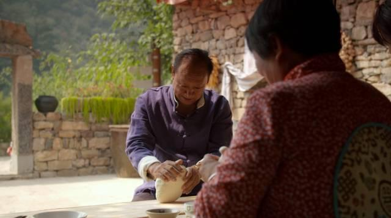我叫张连水，山西临汾人。我当过9年的农民，赶过毛驴车 ，做过会计、电工、出纳，后来做了煤矿生意，成了个煤老板。
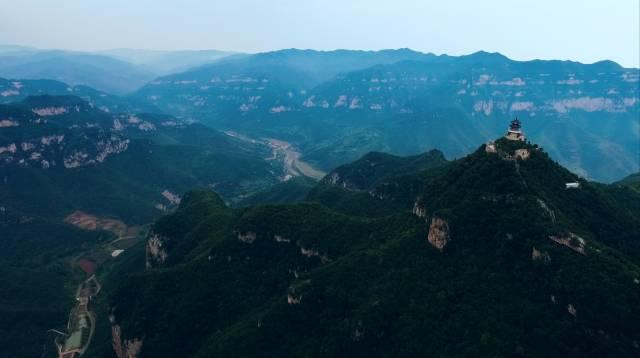13年前，我开始在家乡做云丘山的旅游开发，前前后后总共投入了10个亿。 第一次来到云丘山是2003年，当时就觉得这座山很神奇。
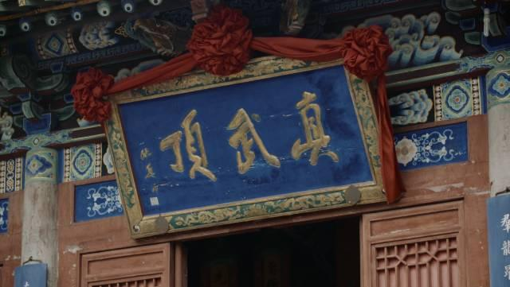 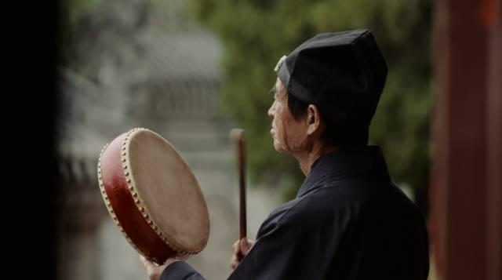云丘山前山是道教，后山是佛教。过去，这里曾经有300多个道士、100多个和尚住在山上。 上古时期很多的传说都来自于这里，特别是农历的二月十五，有3万到5万人的朝山拜顶。
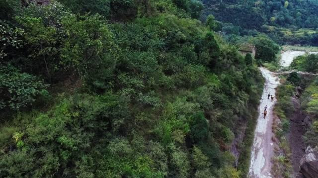 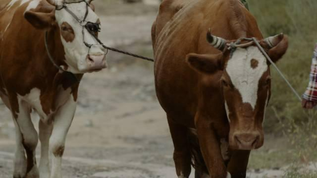山脚下还有一条路，是当年盐商将运城的盐运往内蒙、外蒙、俄罗斯的必经之路。
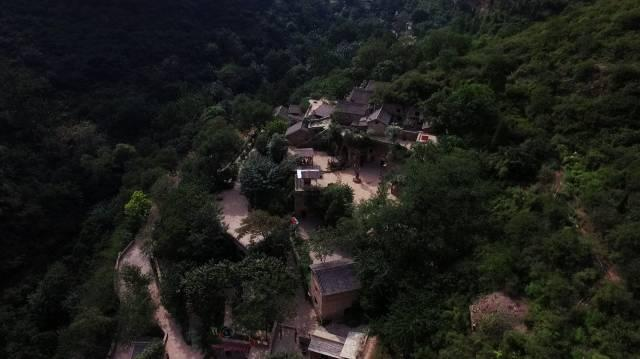云丘山总共有11座古村落，十几年来我们只开发了一个， 就是有着2000多年历史的塔尔坡古村落。这里是以前道士起居的地方，老子就曾经在这里住过。
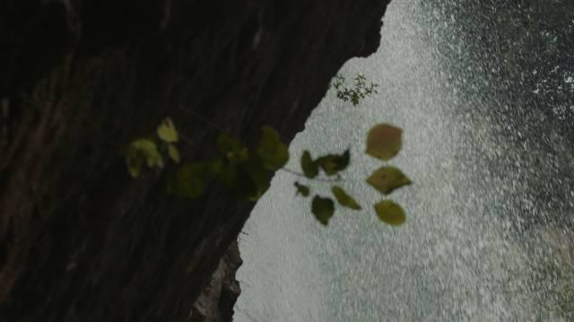村民们都知道，小麦如果要丰收，就要下“三十八”场雨。 年轻人不知道，以为是“38场”雨，其实是在农历的3月、8月和10月下三场好雨。
如果庄稼长个子的时候遇到了天旱，我们就会祈雨。
小辈去长辈家的时候，要送一个混沌馍，但是这个混沌馍蒸的时候，要裂开口，寓意是老人笑口常开。 而老人去小辈家的时候，要送一个花卷，花卷也得裂开口，整个看着就像风华正茂的意思。
小辈去长辈家的时候，要送一个混沌馍，但是这个混沌馍蒸的时候，要裂开口，寓意是老人笑口常开。 而老人去小辈家的时候，要送一个花卷，花卷也得裂开口，整个看着就像风华正茂的意思。
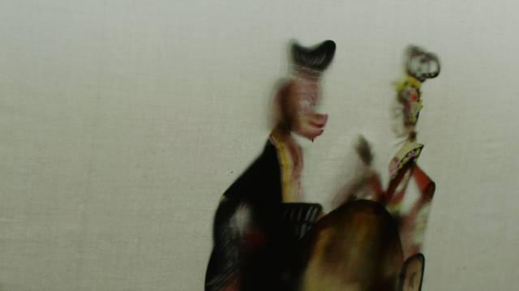我还经常去塔尔坡古村和游客、村民们一起看皮影戏，皮影戏里面演的西游记，猪八戒背媳妇，大人小孩看了都喜欢。
我不推荐客人在这里吃些大鱼大肉，反而希望他们尝尝我们自己种植的瓜果蔬菜， 比如说洋姜、芥菜、棉花山药、太太饼等等这些小吃。村里还有农民养野蜂，野蜂采下的蜜叫做土蜂蜜， 他们的土蜂蜜特别甜。
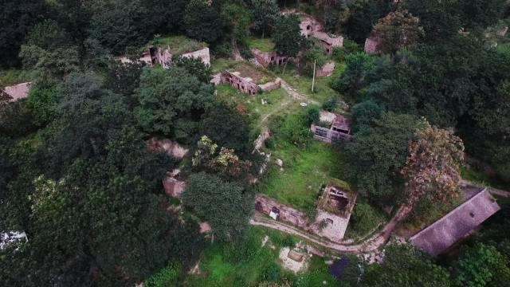整个云丘山有上千个石窑洞，我们现在都把它保护下来。在开发云丘山景点的时候， 我都先去踩过点。以前这里没有路，就是要靠攀爬。
我们去的时候，背着水、背着馍和鸡蛋，大清早出发，很晚才回家。一边爬、一边拍照记录，旁边就是悬崖。有时候脚下不注意， 就会掉进山洞里。有一次在踩点的时候，钻在山林里，那个林子上面就是几条蛇，可把我们吓坏了。
做云丘山旅游开发的初衷，我就是想把山上的路修一修，把庙修一修，让老百姓朝山拜顶的时候路好走一点，感受好一点。 再一个是让跟着我的这帮老伙计，给一条出路。而且，我不想我的下一代再继续挖煤炼焦了
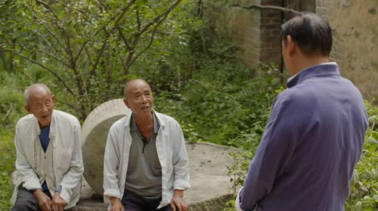现在，柏油马路修通了，水电也接通了。几百个村名都变成了景区的工人， 他们的生活好起来了，很多工人有了自己的小汽车。想到这些，以前吃的苦就不算什么，一切都是值得的。